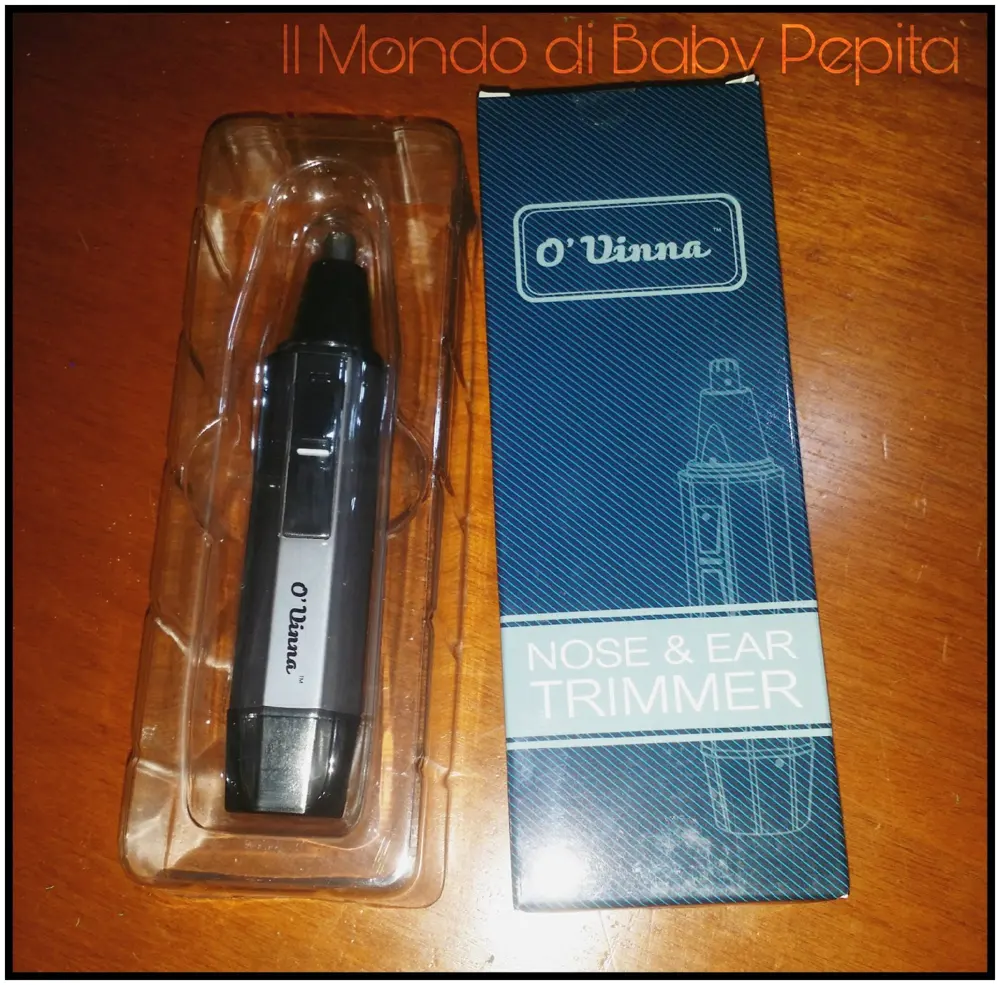
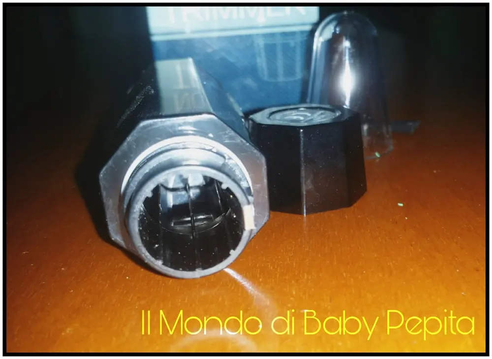
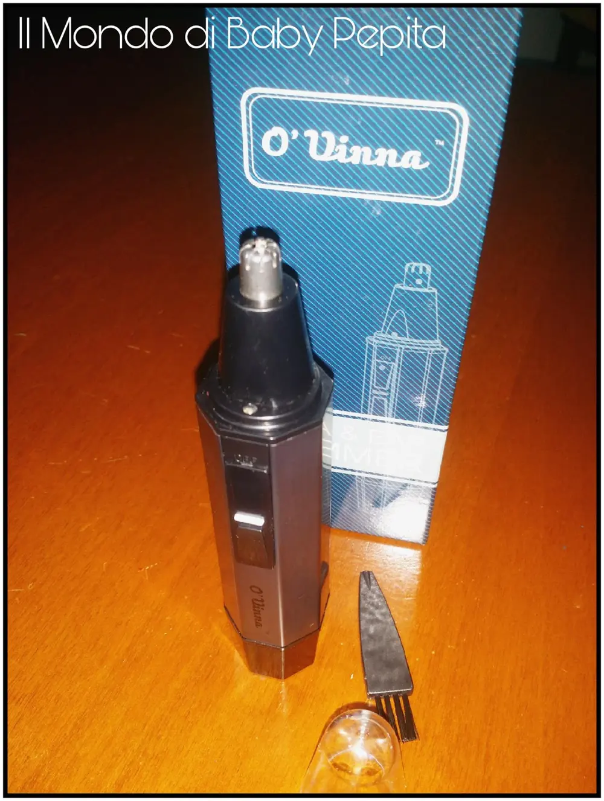
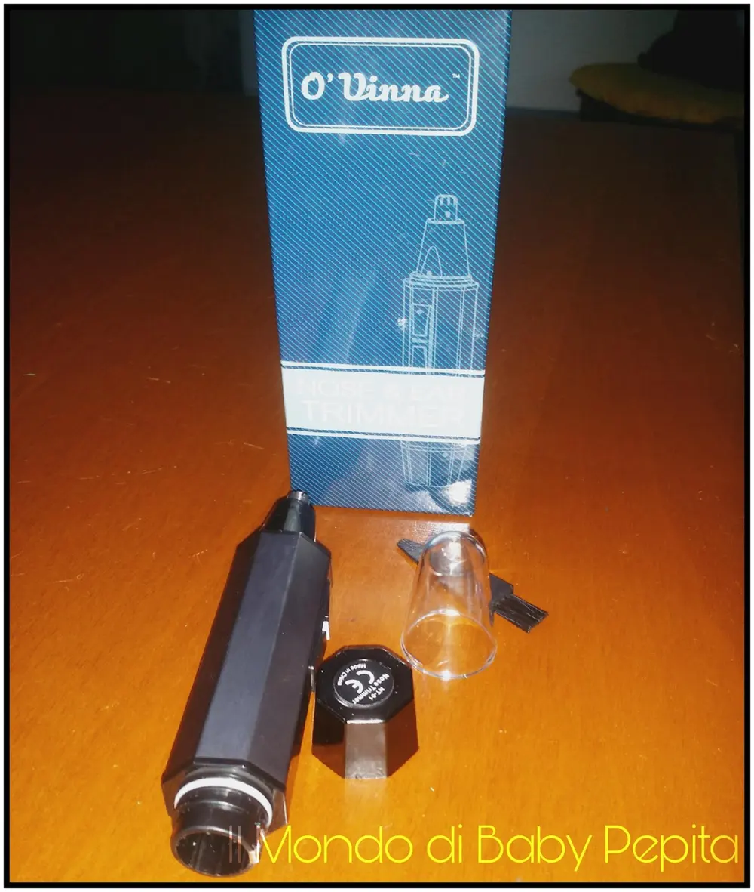
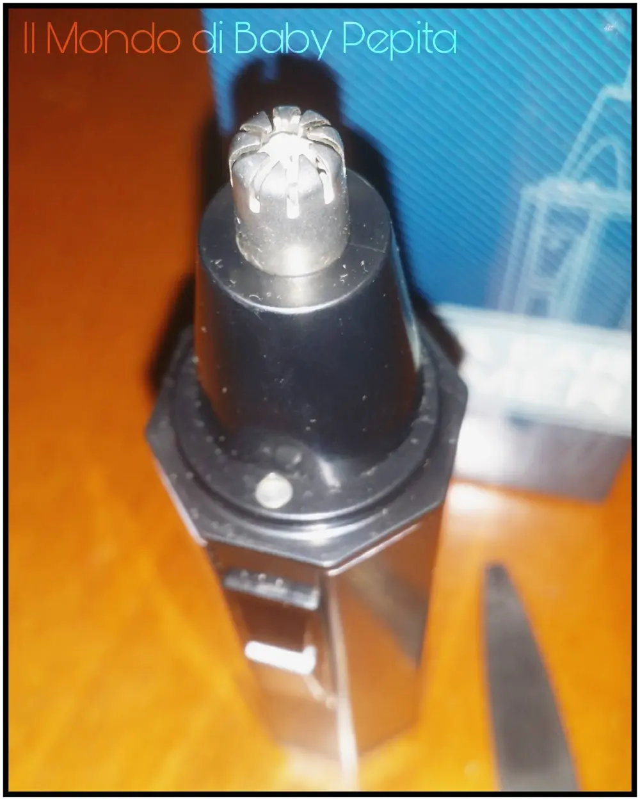
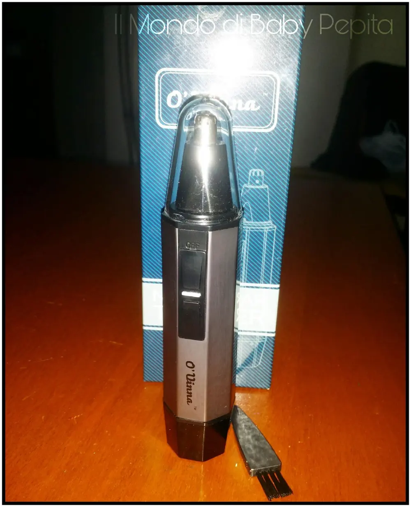

Tagliapeli elettronico per naso e orecchie - Coolreall Official
 Oggi recensiamo un prodotto prettamente da uomo ma non ha tutta questa esclusiva se vogliamo pensare quanto noi donne siamo fissate con i peli.
Oggi recensiamo un prodotto prettamente da uomo ma non ha tutta questa esclusiva se vogliamo pensare quanto noi donne siamo fissate con i peli.
Il venditore Coolreall Official mi ha omaggiato di questo tagliapeli elettronico per naso e orecchie.

Andiamo ad analizzare:
Nella confezione contiene:1 rifinitore naso e orecchie O’VINNA1 spazzolino per la pulizia delle lame1 piccolo manuale di istruzioni

Arrivato in una piccola scatola ben impacchettato ideale anche per un regalo .Anzi siamo quasi Natale ed è un'idea regalo. davvero utile
Il dispositivo è alimentato da una sola batteria Stilo AA (non inclusa nella confezione) e si attiva attraverso un pulsante a scorrimento .

Il suo funzionamento è perfetto e il taglio è preciso e di buona qualità anche con i peli più piccoli, adatto per peli del naso, orecchie e peli superflui.


E' presente un tasto di sicurezza nei tasti di accensione per evitare che si accenda durante il trasporto. E' infatti necessario premere tale tasto per poter spostare l'interruttore in ON.

La lama scorre all'interno di questa speciale testina cilindrica, questo consente una rasatura perfettamente sicura in ogni condizione, indipendentemente dall'uso senza il rischio di farsi male.

E' dotato di una luce LED che illumina la zona che andremo a rasare.
In conclusione è un buon prodotto considerando anche il buon prezzo.

Prezzo: 10,99€
Lo consiglio per chi ha molta peluria e soprattutto non sopporta i peli superflui.
Per poterlo acquistare :CLICCA QUI
Per quanto riguarda me,seguitemi sui miei social:FACEBOOKINSTAGRAMTWITTERYOUTUBE